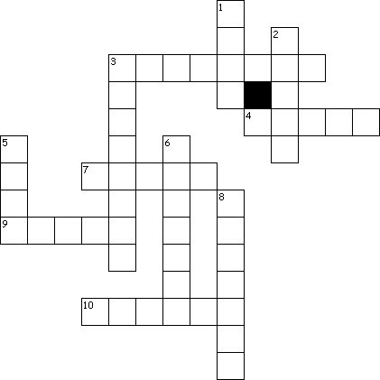

This Week: Isaiah 63:7-9, Psalm 148Psalm 148, Hebrews 2:10-18 Matthew 2:13-23
Elementary School Pew-work
Unscramble the bolded words:
After the wise men had gone, an lagen ____________ from the Lord appeared to Joseph in a ea dmr____________ and said, "Get up! Hurry and take the child and his mother to pgytE ____________! Stay there until I tell you to return, because eroHd ____________ is looking for the child and wants to kill him." That night, oJseph ____________ got up and took his wife and the child to Egypt, where they stayed until Herod died. So the Lord's promise came true, just as the ophetpr ____________ had said, "I called my son out of Egypt." ... Then in a dream he was told to go to Galilee, and they went to live there in the town of Nazareth. So the Lord's mproeis ____________ came true, just as the prophet had said, "He will be called a Nazarene."
Who
told Joseph to take the child and his mother to
Egypt?
__________________________________________________________________________
How
long did the family stay in
Egypt?
__________________________________________________________________________
Where
did the family go in
Palestine?
__________________________________________________________________________
|
Across 4. messenger 7. sleep-pictures 8. who speaks God's word 9. evil king Down 1. someone from Nazareth 2. land of exile 3. Jesus' earthly father 5. God 6. learned |
Next week:Isaiah 60:1-6 , Psalm 72:1-7, 10-14 , Ephesians 3:1-12 , Matthew 2:1-12
This Week: Isaiah 63:7-9, Psalm 148Psalm 148, Hebrews 2:10-18 Matthew 2:13-23
Middle-School Pew-work
|
10For it became him, for whom are all things, and by whom are all things, after he had brought many suns unto glory, that he should make the captain of their salvation perfect through afflictions. 11For both he that sanctifieth, and they which are sanctified, are all of one. For which cause, he is not ashamed to call them brethren, 12Saying: I will declare thy name unto my brethren, in the midst of the Church will I praise thee. |
13And again: I will put my trust in him. And again: Behold here am I, and the children which God hath given me. 14Forasmuch then as the children are partakers of flesh and blood, he also himself likewise took part with the, that through death he might expel him that had lordship over death, that is the devil: 15And that he might deliver them, which through fear of death, were all their life time in danger of bondage. |
16For he in no place taketh on him the Angels: but the seed of Abraham taketh he on him. 17Wherfore, in all things it became him to be made like unto his brethren, that he might be merciful, and a faithful high priest in things concerning God, for to purge the peoples sins. 18For in that he himself suffered and was tempted, he is able to succour them that are tempted. |
In
what ways have you “suffered”? Did or does Jesus share
in that suffering? If you haven't suffered, how does NOT suffering
affect your relationship with Jesus?
________________________________________________________________________
________________________________________________________________________
________________________________________________________________________
________________________________________________________________________
________________________________________________________________________
________________________________________________________________________
________________________________________________________________________
________________________________________________________________________
|
 |
Across 3. someone from Nazareth 4. evil king 7. sleep-pictures 9. land of exile 10. Jesus' earthly father |
Down 1. God 2. messenger 3. Mary's home town 5. learned 6. Northern province of Israel 8. who speaks God's word |
Next week:Isaiah 60:1-6 , Psalm 72:1-7, 10-14 , Ephesians 3:1-12 , Matthew 2:1-12